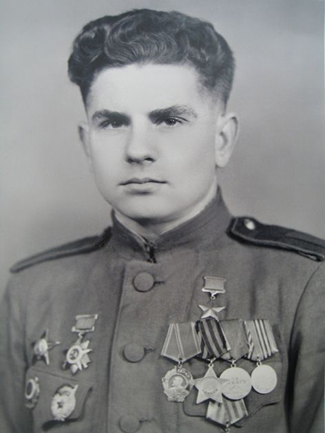

Гинтовт Витольд Михайлович
Герой Советского Союза Витольд Михайлович Гинтовт родился 7 марта 1922 года в деревне Слободщине Минского района. Окончил семилетку, работал комбайнером. На фронт попал в 1941 году, в 200-ю танковую бригаду. В неофициальном списке лучших советских танковых асов (184 человека) наш земляк гвардии старшина Гинтовт Витольд Михайлович находится на 28 месте. Им в составе экипажа танка Т-34 был уничтожен 21 танк противника, из них — 4 тяжелых танка «Тигр», а также 4 самоходных установки врага, два танка, один из них «Пантера», захвачены исправными в ходе боев, а также уничтожено 27 орудий, 80 автомашин и более сотни солдат и офицеров противника. Примечательно, что 6 танков было уничтожено в одном бою! За время войны участвовал в сотне танковых атак, дважды горел в танке, трижды был ранен. Экипаж Гинтовта первым вышел на государственную границу Румынии, освобождал Польшу и Чехословакию. С боями дошел до Берлина и закончил войну перед Рейхстагом. После войны вернулся в Минск, работал прорабом СУ-15 «Спецстрой». Последняя его крупная стройка — метрополитен. Имя В. М. Гинтовта присвоено улице микрорайона «Уручье» и средней общеобразовательной школе № 202 г. Минска